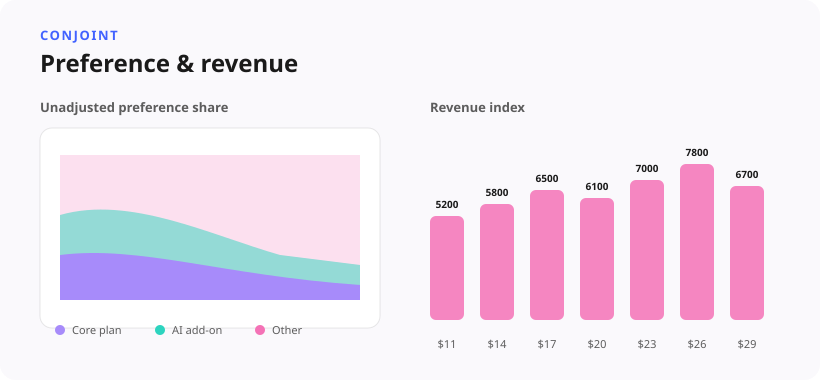

Purchase Intent for AI Workspace Bundles
Core plan = the hook, AI = the enhancer
A purchase-intent study that reframed a bundle's commercial story: core plan capabilities were the real hook, AI features were the enhancer.
Situation
Product and marketing teams were packaging a multi-product plan bundle, combining baseline plan capabilities with advanced automated features across an enterprise user base. The commercial hypothesis assumed the newly integrated capabilities would directly lift conversion and purchase intent. But initial positioning relied on abstract labels like “Automated Workflows,” creating real uncertainty about the plan's actual value before anyone saw the commercial stimuli.
Task
Design and field a purchase-intent survey that set the right pre-stimulus context, measured intent and feature drivers for the bundle, and returned clear recommendations for product marketing — not just a topline percentage.

Approach
Survey design craft came first: what context gets shared before respondents see the first bundle, what context an earlier email had already set, and whether the survey intro needed to restate it — standard practice for pricing-style studies. The study was then fielded and roughly 30 responses were synthesized into a stakeholder deep-dive covering purchase intent, feature drivers, and AI's incremental role.
Result
The research revealed that baseline plan capabilities served as the primary acquisition hook, while premium automated features operated as secondary value enhancers. Respondents understood the overall plan composition, but conversion conviction was held back by dense information framing and feature ambiguity. This reframed the bundle strategy for product, PMM, and design teams — away from feature-heavy messaging and toward core-value storytelling — leading to streamlined copy, visual-first messaging, and optimized tier packaging across multi-product scaling contexts.
Methodology
Purchase-intent, pricing-adjacent survey design (intro and context control), feature-driver ranking, and synthesis into actionable PMM recommendations — showing quant UXR influencing monetization messaging, not just in-product UX.
Skills demonstrated: Survey design, Stakeholder communication